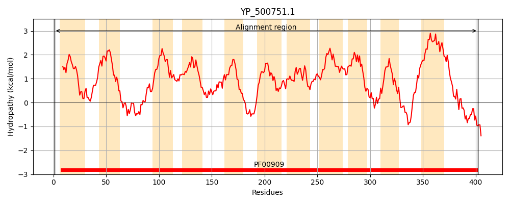
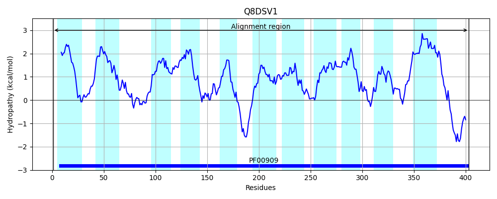
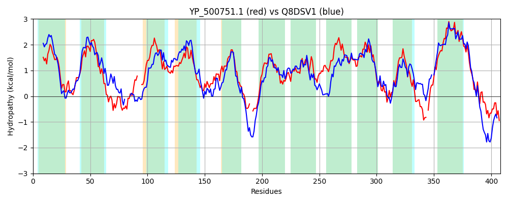

Hit Accession: Q8DSV1
Hit TCID: 1.A.11.1.9
Hit Description: gnl|BL_ORD_ID|16043 gnl|TC-DB|Q8DSV1|1.A.11.1.9 Ammonium transporter OS=Streptococcus mutans serotype c (strain ATCC 700610 / UA159) OX=210007 GN=nrgA PE=3 SV=1
Mach Len: 408
e:0.000000
Query TMS Count : 11
Hit TMS Count: 11
TMS-Overlap Score: 11.150000
Predicted Substrates:CHEBI:7435;ammonium
BLAST Alignment:
Score: 864 , Bit scores: 337 bits, E-value: 3.2e-113, Alignment length: 408, Percentage identity: 43
Query: 1 MNLNDTIFMFLCTLLVWLMTPGLSLFYGGLVQSKNALNTVMQSMAAIVLVTFVWITVGFTISFGNGNLWFGNWEYTFLNHVGFATQEDISPH---IPFALFMLFQMMFCTIAISILSGSIAEKMKFIPYLLFVVIWTALVYSPVAHWVWGGGWINKLGVLDFAGGTVVHITSGVSGLVLAIMIGKGNKHS--ESTPHNLIITLIGGIFVWIGWYGFNVGSAFTFDNIAMLAFTNTVISASAGAIGWLILEYIFKKTTSLLGLLLGALAGLVVITPAAGYVTYLSATIMALIGGICCYIVINYIKVKLKYHDALDAFGIHGVGGIIGAVLTAVFQSKKANPDIEN-GFIYTGDIHIILVQILCVTAVVIFSIVMTFIIAKVIKLITPLSVTEQETNIGLDKIVHGEHAY 402
M+ F+ +C+ LV+LMTPGL+ FYGGL + KN +NT+M ++ + L + +W+ VG+++SF FG++ + FLN V +E S IP LF FQMMF I ++IL+G++A +M+F P ++F++ W LVY P AH VW G + K G LDFAGG VVHITSGVSGLVLA+++GK + E PHN+ L+G +W GW+GFN GSA + +A+ A T ISA+A WL+LE SL+G G +AGLV ITP AG+V S+ ++ L+ CY I +K K Y DALDAFG HG+GGI G ++T +F + D N G IY G+ + LV + + +I+S +++F+I KVI L P+ V+++E GLD HGE AY
Sbjct: 1 MDSGSIAFIIICSALVFLMTPGLAFFYGGLGRRKNVINTMMMAVVPLALASLLWVVVGYSLSFSGVGKVFGDFSHVFLNGV----KEGASSRGLTIPDTLFSGFQMMFSIITVAILTGAVAGRMRFTPLVIFIIFWLLLVYYPFAHMVWDDGLLAKWGTLDFAGGDVVHITSGVSGLVLALVVGKRRDYDRLEYRPHNIPFVLLGAGLLWFGWFGFNAGSALAANGLAVHALLTTHISAAAAMFSWLLLEKYLNGKPSLVGGSTGLVAGLVAITPGAGFVPLWSSLLIGLMVSPLCYFAIAVLKSKFGYDDALDAFGCHGIGGIFGGIVTGLFTTPHLALDKSNIGLIY-GNARLFLVILAAILFTIIWSALISFLIIKVISLFMPIRVSDREEATGLDDKEHGETAY 403 | Protein Hydropathy Plots: |
|---|
|  |  |
Pairwise Alignment-Hydropathy Plot:
|
|---|
|  |